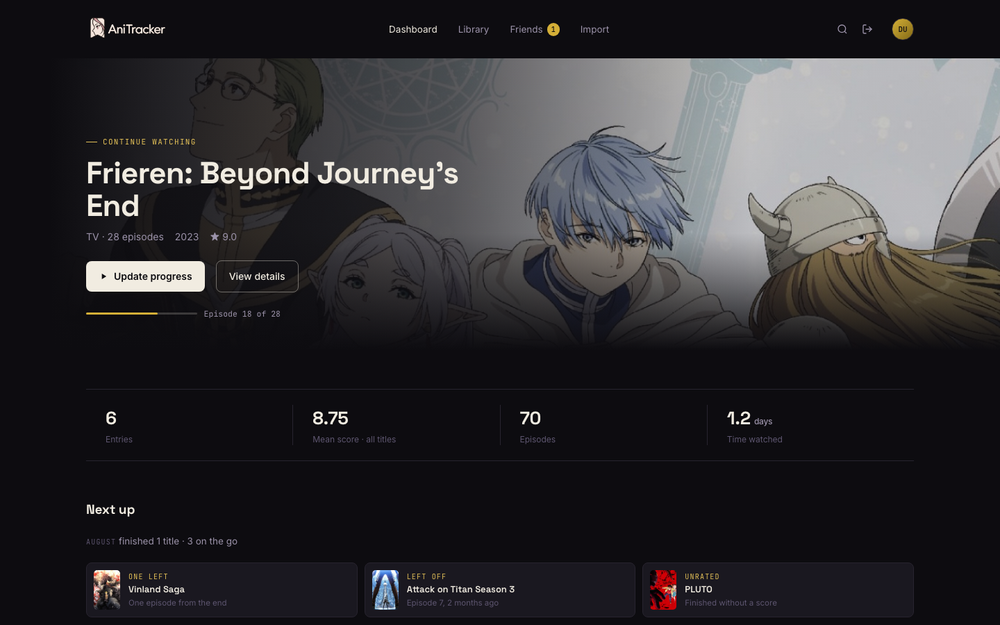
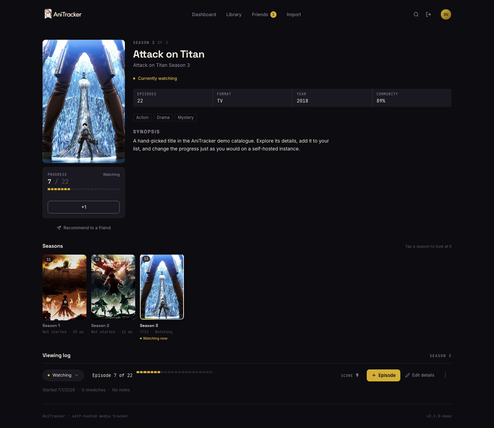
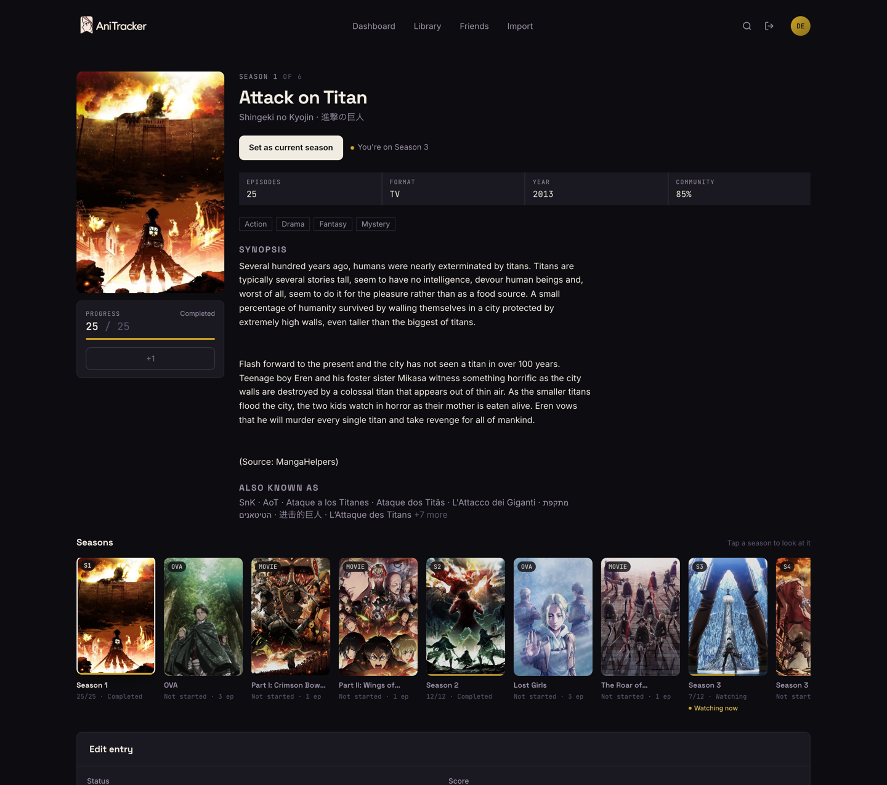
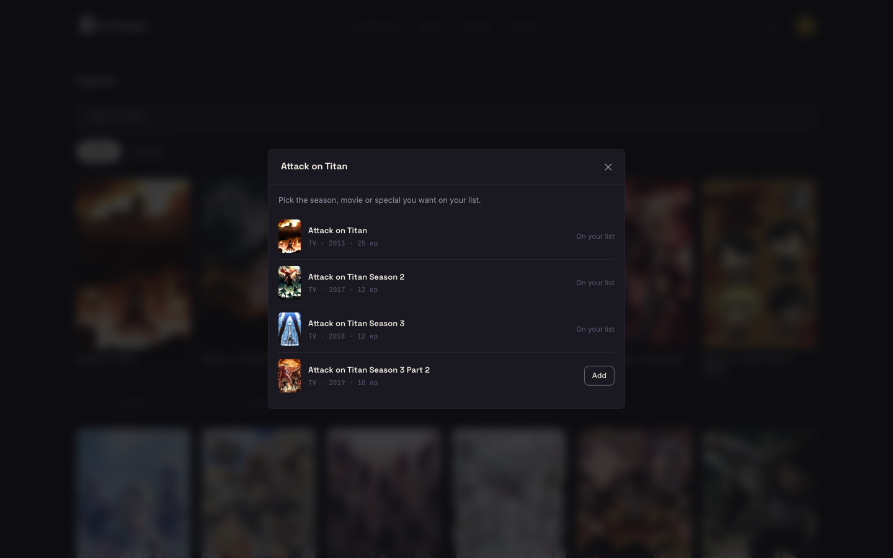
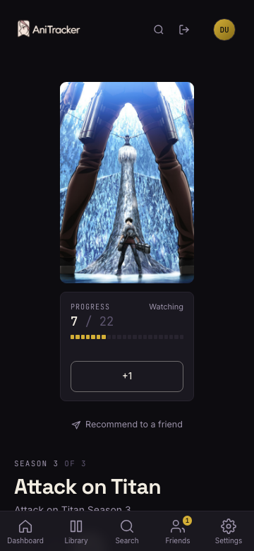

Browse without losing your place
Opening another season changes what you see—not what you are watching. Progress only moves when you say so.
Current release 17 AUG 2026
A private, self-hosted anime and manga tracker built for households, friends, and every season in between.

01 Your queue, without an algorithm choosing it for you.
01No telemetryYour viewing stays yours.
02Three providersAniList, Jikan, Kitsu.
03One commandDocker Compose deployment.
04Multi-userBuilt for your circle.
Release dossier V2.0.0
Version 2 reorganizes a series around the way it is actually watched: seasons, sequel parts, movies, OVAs, and specials stay connected—but every entry keeps its own progress.
Opening another season changes what you see—not what you are watching. Progress only moves when you say so.
Finish a season and AniTracker offers the next one. It never advances your list behind your back.
A series appears as one result. Pick the exact season or related entry you want to add.
Interface archive REAL SCREENS
Manga gutters, paper-and-ink contrast, and enough information to make the next action obvious.




Compact edition PWA
Install AniTracker from the browser and keep the season selector, progress controls, and title details above the fold.
Run your own copy DOCKER COMPOSE
Clone, create a secret, and start. The first-run wizard handles the admin account when you open AniTracker.
$ git clone https://github.com/RGBond007/anitracker.git
$ cd anitracker
$ cp .env.example .env
$ printf '\nJWT_SECRET=%s\n' "$(openssl rand -hex 32)" >> .env
$ docker compose up -d --build